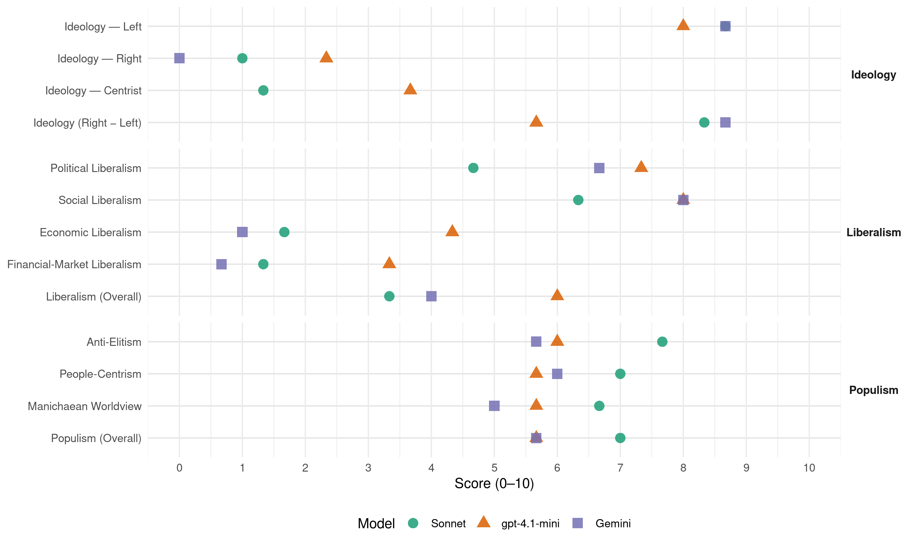

PCP (Portugal, 2019)
manifesto_id 35220_201910
Get full text: This site shows derived annotations and short verbatim quotes only. The full manifesto text is © Manifesto Project / WZB — obtain it via manifesto-project.wzb.eu using the manifesto_id above.
Headline scores
| Dimension | Sonnet | gpt-4.1-mini | Gemini |
|---|---|---|---|
| Populism (Overall) | 7.0 | 5.7 | 5.7 |
| Anti-Elitism | 7.7 | 6.0 | 5.7 |
| People-Centrism | 7.0 | 5.7 | 6.0 |
| Manichaean Worldview | 6.7 | 5.7 | 5.0 |
| Ideology (Right − Left) | 8.3 | 5.7 | 8.7 |
| Liberalism (Overall) | 3.3 | 6.0 | 4.0 |
| Political Liberalism | 4.7 | 7.3 | 6.7 |
| Social Liberalism | 6.3 | 8.0 | 8.0 |
| Economic Liberalism | 1.7 | 4.3 | 1.0 |
| Financial-Market Liberalism | 1.3 | 3.3 | 0.7 |
Evidence per dimension
Economic Liberalism
Gemini · score 1.0 · verified · chunk 1
“recuperação pelo Estado do comando político da economia”
Opções estratégicas. 2.2.1. A recuperação pelo Estado do comando político da economia, com a afirmação da soberania nacional
Gemini · score 1.0 · verified · chunk 2
“reversão das políticas desreguladoras e liberalizadoras”
para a competição (entre produções, produtores e países), e a reversão das políticas desreguladoras e liberalizadoras do comércio mundial.
Gemini · score 1.0 · verified · chunk 3
“rejeitando as linhas desreguladoras e liberalizadoras”
reversão das lógicas prevalecentes no comércio internacional, rejeitando as linhas desreguladoras e liberalizadoras.
gpt-4.1-mini · score 3.0 · verified · chunk 1
“reversão das privatizações e a recuperação para o sector público dos sectores básicos”
A afirmação da propriedade social e do papel do Estado em empresas e sectores estratégicos, nomeadamente com um forte condicionamento regulamentar e de regulação, e a reversão programada das privatizações e a sua integração no sector público, por nacionalização e/ou negociação adequada ou outros instrumentos que assegurem o controlo público.
gpt-4.1-mini · score 4.0 · verified · chunk 2
“uma política que aposte num forte crescimento do investimento, público e privado”
Investimento e uma banca para o desenvolvimento Uma política que aposte num forte crescimento do investimento, público e privado, permitindo iniciar uma trajectória que o aproxime do limiar mínimo dos 25% do PIB – valor necessário para assegurar uma taxa de crescimento do PIB de 3,0% -,
gpt-4.1-mini · score 6.0 · verified · chunk 3
“a política fiscal justa e eficaz, contas públicas consolidadas”
A exigência de uma governação rigorosa e planificada, dotado de uma Administração Pública eficiente, com os meios humanos e técnicos necessários de responder às necessidades, uma política fiscal justa e eficaz, contas públicas consolidadas, o combate ao desperdício, a dívida sustentável no médio e longo prazo, e uma política orçamental com intervenção positiva nos ciclos económicos e na melhoria das funções sociais do Estado.
Sonnet · score 1.0 · verified · chunk 1
“reversão das privatizações”
a reversão programada das privatizações e a sua integração no sector público, por nacionalização e/ou negociação adequada
Sonnet · score 2.0 · verified · chunk 2
“em ruptura com as directivas da UE de destruição das empresas públicas e de desregulação, privatização”
Uma política de transportes e comunicações estratégicos e estruturantes na economia, no ordenamento do território e desenvolvimento das regiões, com uso eficiente da energia, em ruptura com as directivas da UE de destruição das empresas públicas e de desregulação, privatização e concentração nas grandes multinacionais
Sonnet · score 2.0 · verified · chunk 3
“rejeição das linhas desreguladoras e liberalizadoras”
rejeitando as linhas desreguladoras e liberalizadoras. Defesa, no âmbito da ONU, da adopção de um pacto de cooperação
Financial-Market Liberalism
Gemini · score 1.0 · verified · chunk 1
“banca comercial sob controlo público”
desenvolvimento social, assente numa banca comercial sob controlo público, onde a CGD (com absorção do Banco de Fomento) terá um papel estratégico.
Gemini · score 0.0 · verified · chunk 2
“bens e actividades financeiras sejam postos sob controlo público”
nacional e para impulsionar o crescimento seguro e equilibrado, reclama que a moeda, o crédito e outros bens e actividades financeiras sejam postos sob controlo público.
Gemini · score 1.0 · verified · chunk 3
“regulação dos mercados financeiros, à tributação das transacções”
pacto de cooperação com vista à regulação dos mercados financeiros, à tributação das transacções financeiras, ao combate à evasão
gpt-4.1-mini · score 2.0 · verified · chunk 1
“negociar a saída da União Bancária, rejeitar o Mercado Único de Capitais”
São grandes orientações: Negociar a saída da União Bancária, rejeitar o Mercado Único de Capitais e recuperar para o Banco de Portugal a supervisão da banca nacional; dotar o Banco de Portugal dos meios para uma fiscalização independente das auditoras privadas; penalizar a especulação financeira e imobiliária e eliminar os benefícios fiscais ao sector bancário.
gpt-4.1-mini · score 3.0 · verified · chunk 2
“rejeitar o Mercado Único de Capitais e recuperar para o Banco de Portugal a supervisão da banca nacional”
São grandes orientações: Negociar a saída da União Bancária, rejeitar o Mercado Único de Capitais e recuperar para o Banco de Portugal a supervisão da banca nacional; dotar o Banco de Portugal dos meios para uma fiscalização independente das auditoras privadas; penalizar a especulação financeira e imobiliária e eliminar os benefícios fiscais ao sector bancário; assegurar o controlo público de todas as instituições intervencionadas pelo Estado.
gpt-4.1-mini · score 5.0 · verified · chunk 3
“defesa da tributação das transacções financeiras”
Defesa, no âmbito da ONU, da adopção de um pacto de cooperação com vista à regulação dos mercados financeiros, à tributação das transacções financeiras, ao combate à evasão e elisão fiscais e à extinção dos paraísos fiscais.
Sonnet · score 1.0 · verified · chunk 1
“banca sob controlo público”
Reconstituir um sector financeiro… assente numa banca comercial sob controlo público, onde a CGD terá um papel estratégico
Sonnet · score 1.0 · verified · chunk 2
“Negociar a saída da União Bancária, rejeitar o Mercado Único de Capitais”
São grandes orientações: Negociar a saída da União Bancária, rejeitar o Mercado Único de Capitais e recuperar para o Banco de Portugal a supervisão da banca nacional
Sonnet · score 2.0 · verified · chunk 3
“revogação da União Bancária”
A revogação da União Bancária e a rejeição das imposições da Governação Económica, do processo do Semestre Europeu
Political Liberalism
Gemini · score 7.0 · verified · chunk 1
“cumprimento da Constituição da República”
Portugal livre e democrático, baseado no respeito pelos direitos e liberdades, e no cumprimento da Constituição da República.
Gemini · score 6.0 · verified · chunk 2
“acompanhamento e controlo democrático da execução”
permitindo à Assembleia da República o acompanhamento e controlo democrático da execução anual das dotações orçamentais
Gemini · score 7.0 · verified · chunk 3
“garantir a participação e a gestão democrática”
Consagrar uma verdadeira gestão democrática das Instituições de Ensino Superior Público e garantir a participação e a gestão democrática das instituições
gpt-4.1-mini · score 7.0 · verified · chunk 1
“defesa do regime democrático de Abril e o cumprimento da Constituição da República”
Um Portugal livre e democrático, baseado no respeito pelos direitos e liberdades, e no cumprimento da Constituição da República. A defesa do regime democrático de Abril e o cumprimento da Constituição da República, com o aprofundamento dos direitos, liberdades e garantias fundamentais e o reforço da intervenção dos cidadãos na vida política.
gpt-4.1-mini · score 7.0 · verified · chunk 2
“assegurar a prestação do serviço em tempo útil, com qualidade e segurança”
Melhorar a qualidade dos serviços prestados e aproximar a Segurança Social dos utentes Admitir os recursos humanos necessários, melhorar a formação e qualificação profissional para aumentar imediatamente a capacidade de resposta dos serviços. Assegurar a prestação do serviço em tempo útil, com qualidade e segurança com o necessário reforço dos serviços com meios humanos, técnicos e informáticos.
gpt-4.1-mini · score 8.0 · verified · chunk 3
“a defesa da democracia política é inseparável da democraticidade”
A defesa da democracia política é inseparável da democraticidade e da proporcionalidade dos sistemas eleitorais e de uma melhor participação dos cidadãos na vida política e social, em condições de igualdade.
Sonnet · score 4.0 · verified · chunk 1
“defesa do regime democrático”
A defesa do regime democrático de Abril e o cumprimento da Constituição da República, com o aprofundamento dos direitos, liberdades e garantias fundamentais
Sonnet · score 4.0 · verified · chunk 2
“permitindo à Assembleia da República o acompanhamento e controlo democrático”
Assim permitindo à Assembleia da República o acompanhamento e controlo democrático da execução anual das dotações orçamentais de investimento de cada ministério
Sonnet · score 6.0 · verified · chunk 3
“verdadeira gestão democrática das Instituições”
Consagrar uma verdadeira gestão democrática das Instituições de Ensino Superior Público e garantir a participação e a gestão democrática
Liberalism (Overall)
Gemini · score 4.0 · verified · chunk 1
“cumprimento da Constituição da República”
Portugal livre e democrático, baseado no respeito pelos direitos e liberdades, e no cumprimento da Constituição da República.
Gemini · score 4.0 · verified · chunk 2
“reversão das políticas desreguladoras e liberalizadoras”
para a competição (entre produções, produtores e países), e a reversão das políticas desreguladoras e liberalizadoras do comércio mundial.
Gemini · score 4.0 · verified · chunk 3
“garantir a participação e a gestão democrática”
Consagrar uma verdadeira gestão democrática das Instituições de Ensino Superior Público e garantir a participação e a gestão democrática das instituições
gpt-4.1-mini · score 5.0 · verified · chunk 1
“defesa do regime democrático de Abril e o cumprimento da Constituição da República”
Um Portugal livre e democrático, baseado no respeito pelos direitos e liberdades, e no cumprimento da Constituição da República. A defesa do regime democrático de Abril e o cumprimento da Constituição da República, com o aprofundamento dos direitos, liberdades e garantias fundamentais e o reforço da intervenção dos cidadãos na vida política.
gpt-4.1-mini · score 6.0 · verified · chunk 2
“assegurar a prestação do serviço em tempo útil, com qualidade e segurança”
Melhorar a qualidade dos serviços prestados e aproximar a Segurança Social dos utentes Admitir os recursos humanos necessários, melhorar a formação e qualificação profissional para aumentar imediatamente a capacidade de resposta dos serviços. Assegurar a prestação do serviço em tempo útil, com qualidade e segurança com o necessário reforço dos serviços com meios humanos, técnicos e informáticos.
gpt-4.1-mini · score 7.0 · verified · chunk 3
“a defesa da democracia política é inseparável da democraticidade”
A defesa da democracia política é inseparável da democraticidade e da proporcionalidade dos sistemas eleitorais e de uma melhor participação dos cidadãos na vida política e social, em condições de igualdade.
Sonnet · score 3.0 · verified · chunk 1
“controlo público de sectores como a banca”
A eliminação de condicionamentos estratégicos pelo controlo público de sectores como a banca e a energia
Sonnet · score 3.0 · verified · chunk 2
“moeda, o crédito e outros bens e actividades financeiras sejam postos sob controlo público”
reclama que a moeda, o crédito e outros bens e actividades financeiras sejam postos sob controlo público
Sonnet · score 4.0 · verified · chunk 3
“rejeição do aprofundamento do mercado único”
A rejeição do aprofundamento do mercado único, nomeadamente o mercado único digital ou o mercado único de capitais
Anti-Elitism
Gemini · score 7.0 · verified · chunk 1
“subordinação do poder político ao poder económico”
confronte o poder e os interesses do grande capital monopolista, que se combata a subordinação do poder político ao poder económico, base na qual se desenvolve a corrupção.
Gemini · score 7.0 · verified · chunk 2
“têm desviado o olhar das grandes fugas”
combate à pequena fraude e evasão fiscais, têm desviado o olhar das grandes fugas aos impostos levadas a cabo com recurso
Gemini · score 3.0 · verified · chunk 3
“promiscuidade e subordinação do poder político ao poder económico”
A criminalidade económica e financeira, decorrente da promiscuidade e subordinação do poder político ao poder económico, e traduzida em escândalos
gpt-4.1-mini · score 8.0 · verified · chunk 1
“combate à dominação económica monopolista”
A efectiva subordinação do poder económico ao poder político, com o combate à dominação económica monopolista, a assumpção e o exercício do Estado das suas missões e incumbências, o combate e punição da corrupção, do crime económico e do tráfico de influências.
gpt-4.1-mini · score 7.0 · verified · chunk 2
“a concentração e centralização da riqueza nos grandes grupos económicos”
A privatização da banca foi a principal alavanca para a concentração e centralização da riqueza nos grandes grupos económicos, reconstituição de antigos monopólios e consolidação de novos.
gpt-4.1-mini · score 3.0 · verified · chunk 3
“a promiscuidade e subordinação do poder político ao poder económico”
A criminalidade económica e financeira, decorrente da promiscuidade e subordinação do poder político ao poder económico, e traduzida em escândalos de dimensão gigantesca envolvendo os responsáveis por instituições financeiras, em tráfico de influências, em negócios ruinosos para o Estado em benefício de interesses privados, em branqueamento de capitais e em fuga ao fisco, assume um carácter sistémico.
Sonnet · score 8.0 · verified · chunk 1
“subordinação do poder político ao poder económico”
que se combata a subordinação do poder político ao poder económico, base na qual se desenvolve a corrupção
Sonnet · score 8.0 · verified · chunk 2
“A privatização da banca foi a principal alavanca para a concentração e centralização da riqueza nos grandes grupos económicos”
Uma banca ao serviço do povo e do País // A privatização da banca foi a principal alavanca para a concentração e centralização da riqueza nos grandes grupos económicos, reconstituição de antigos monopólios
Sonnet · score 7.0 · verified · chunk 3
“política de direita, que lesou o carácter público”
A política de direita, que lesou o carácter público do Ensino Superior, comprometendo a sua qualidade, universalidade
Ideology — Centrist
gpt-4.1-mini · score 4.0 · verified · chunk 1
“uma política patriótica e de esquerda, baseada na Constituição da República”
Uma política patriótica e de esquerda, baseada na Constituição da República, que assegure a construção de um País desenvolvido, de progresso e de igualdade, tem, para o PCP, seis objectivos centrais.
gpt-4.1-mini · score 4.0 · verified · chunk 2
“uma política económica e financeira ao serviço do povo e do País”
A Caixa Geral de Depósitos deve constituir-se como um instrumento fundamental do Estado para uma política económica e financeira ao serviço do povo e do País.
gpt-4.1-mini · score 3.0 · verified · chunk 3
“a defesa da democracia política é inseparável da democraticidade”
A defesa da democracia política é inseparável da democraticidade e da proporcionalidade dos sistemas eleitorais e de uma melhor participação dos cidadãos na vida política e social, em condições de igualdade.
Sonnet · score 1.0 · verified · chunk 1
“política patriótica e de esquerda”
O PCP assume-se como força de ruptura para construir um Portugal com futuro… a política alternativa, patriótica e de esquerda
Sonnet · score 1.0 · verified · chunk 2
“ao serviço do povo e do País”
A Caixa Geral de Depósitos deve constituir-se como um instrumento fundamental do Estado para uma política económica e financeira ao serviço do povo e do País
Sonnet · score 2.0 · verified · chunk 3
“política patriótica e de esquerda”
A política patriótica e de esquerda – assumindo-se como herdeira e continuadora dos valores da Revolução de Abril
Ideology — Left
Gemini · score 9.0 · verified · chunk 1
“UM PROGRAMA PATRIÓTICO E DE ESQUERDA”
2.ª PARTE 19 CAPÍTULO I UM PROGRAMA PATRIÓTICO E DE ESQUERDA 19 1.1. Objectivos de uma política patriótica
Gemini · score 9.0 · verified · chunk 2
“responsabilidade da baixa produtividade nacional é do grande capital”
niveis de produtividade semelhantes aos de outros países. // A responsabilidade da baixa produtividade nacional é do grande capital, que prefere distribuir dividendos
Gemini · score 8.0 · verified · chunk 3
“combate político e propostas de décadas contra a corrupção”
O PCP continuará empenhado nesta luta, na linha do seu património de combate político e propostas de décadas contra a corrupção, desde o fim do sigilo bancário
gpt-4.1-mini · score 9.0 · verified · chunk 1
“uma mais justa distribuição da riqueza, com a elevação de rendimentos do trabalho”
Um País desenvolvido e solidário, onde os trabalhadores e o povo encontrem plena resposta à realização dos seus direitos e aspirações. Uma mais justa distribuição da riqueza, com a elevação de rendimentos do trabalho, a defesa do emprego estável e com direitos, subida dos valores das reformas e pensões, a defesa do sistema público solidário e universal de Segurança Social, o combate ao desemprego e à precariedade, e uma política fiscal justa.
gpt-4.1-mini · score 8.0 · verified · chunk 2
“tributação efectiva em Portugal de todos os rendimentos gerados no território”
normas que impeçam o planeamento fiscal, para reduzir a base tributária das grandes empresas e dos grupos económicos; tributação efectiva em Portugal de todos os rendimentos gerados no território; taxa de 50% ou 90% respectivamente em todas as transferências financeiras ou rendimentos dirigidos aos paraísos fiscais; taxa de 0,5% sobre todas as transacções financeiras; fim dos benefícios fiscais na Zona Franca da Madeira; englobamento obrigatório de todos os rendimentos em sede de IRS acima dos 100 mil Euros e imposto extraordinário sobre o património mobiliário de elevado valor
gpt-4.1-mini · score 7.0 · verified · chunk 3
“a defesa dos direitos dos trabalhadores e do povo”
Portugal e a integração europeia Os últimos anos confirmaram que uma política que defenda os direitos dos trabalhadores e do povo, o desenvolvimento económico e a soberania nacional, se confrontará com os constrangimentos da União Económica e Monetária e do Euro e com a ingerência, as pressões e a chantagem da União Europeia para contrariar qualquer vontade de afirmação soberana.
Sonnet · score 9.0 · verified · chunk 1
“redistribuição dos rendimentos indirectos”
um significativo reforço da redistribuição dos rendimentos indirectos, via Segurança Social e Orçamento do Estado
Sonnet · score 9.0 · verified · chunk 2
“aumento geral dos salários para todos os trabalhadores”
O PCP assume o compromisso em defender: O aumento geral dos salários para todos os trabalhadores, com um significativo aumento do salário médio
Sonnet · score 8.0 · verified · chunk 3
“combate à precariedade laboral e o aumento dos salários”
O combate decidido à precariedade laboral e o aumento dos salários, logo à entrada no mundo do trabalho
Ideology (Right − Left)
Gemini · score 9.0 · verified · chunk 1
“UM PROGRAMA PATRIÓTICO E DE ESQUERDA”
2.ª PARTE 19 CAPÍTULO I UM PROGRAMA PATRIÓTICO E DE ESQUERDA 19 1.1. Objectivos de uma política patriótica
Gemini · score 9.0 · verified · chunk 2
“responsabilidade da baixa produtividade nacional é do grande capital”
niveis de produtividade semelhantes aos de outros países. // A responsabilidade da baixa produtividade nacional é do grande capital, que prefere distribuir dividendos
Gemini · score 8.0 · verified · chunk 3
“combate político e propostas de décadas contra a corrupção”
O PCP continuará empenhado nesta luta, na linha do seu património de combate político e propostas de décadas contra a corrupção, desde o fim do sigilo bancário
gpt-4.1-mini · score 7.0 · verified · chunk 1
“uma política patriótica e de esquerda, baseada na Constituição da República”
Uma política patriótica e de esquerda, baseada na Constituição da República, que assegure a construção de um País desenvolvido, de progresso e de igualdade, tem, para o PCP, seis objectivos centrais.
gpt-4.1-mini · score 6.0 · verified · chunk 2
“a concentração e centralização da riqueza nos grandes grupos económicos”
A privatização da banca foi a principal alavanca para a concentração e centralização da riqueza nos grandes grupos económicos, reconstituição de antigos monopólios e consolidação de novos.
gpt-4.1-mini · score 4.0 · verified · chunk 3
“a defesa dos direitos dos trabalhadores e do povo”
Portugal e a integração europeia Os últimos anos confirmaram que uma política que defenda os direitos dos trabalhadores e do povo, o desenvolvimento económico e a soberania nacional, se confrontará com os constrangimentos da União Económica e Monetária e do Euro e com a ingerência, as pressões e a chantagem da União Europeia para contrariar qualquer vontade de afirmação soberana.
Sonnet · score 9.0 · verified · chunk 1
“combate decidido à dependência externa”
A recuperação pelo Estado do comando político da economia, com a afirmação da soberania nacional e o combate decidido à dependência externa
Sonnet · score 9.0 · verified · chunk 2
“combatendo a apropriação privada dos ganhos obtidos”
Ao serviço da economia nacional e da melhoria das condições de vida dos trabalhadores e do povo e na Segurança Social, combatendo a apropriação privada dos ganhos obtidos como desenvolvimento tecnológico
Sonnet · score 7.0 · verified · chunk 3
“emancipação social dos trabalhadores e do povo português”
A emancipação social dos trabalhadores e do povo português é indissociável da defesa da soberania nacional
Ideology — Right
Gemini · score 0.0 · verified · chunk 3
“combate as derivas reaccionárias e nacionalistas”
Defende as relações internacionais baseadas na igualdade entre estados, na justiça e na paz, combate as derivas reaccionárias e nacionalistas.
gpt-4.1-mini · score 3.0 · verified · chunk 1
“romper com as imposições da União Europeia e a submissão ao Euro”
Só não se avançou mais porque o PS não deixou, porque o PS mantém presente na sua governação opções essenciais da política de direita. Os avanços alcançados não iludem que era necessário e possível ir mais além na resposta que a dimensão dos problemas exigia. Só um Programa para uma política patriótica e de esquerda estará em condições de garantir esse percurso, com uma dimensão patriótica que coloque os interesses nacionais à frente das imposições externas, que recupere as parcelas de soberania perdidas e os instrumentos capazes de a efectivar.
gpt-4.1-mini · score 2.0 · verified · chunk 2
“condiciona o crédito das famílias e das empresas”
A banca privada desempenha um papel fundamental no desvio dos recursos nacionais para o estrangeiro, condiciona o crédito das famílias e das empresas, promove a especulação financeira e imobiliária e o desmantelamento do aparelho produtivo, enquanto ataca os direitos dos trabalhadores do sector.
gpt-4.1-mini · score 2.0 · verified · chunk 3
“campanhas político-ideológicas, alimentadas em fake news”
Neste quadro, intensificam-se as campanhas político-ideológicas, alimentadas em fake news, na deriva desinformativa, de calúnia e difamação (como a produzida contra o PCP), de anticomunismo e propaganda protofascista, a que sectores das classes dominantes, a pretexto das fake news, procuram juntar a imposição da censura pelo poder económico-mediático.
Sonnet · score 1.0 · verified · chunk 1
“soberania nacional”
A recuperação pelo Estado do comando político da economia, com a afirmação da soberania nacional e o combate decidido à dependência externa
Sonnet · score 1.0 · verified · chunk 2
“É necessária a reversão de tal rumo, condição para a afirmação da soberania nacional”
O domínio do capital estrangeiro acentuou-se muito com a Troica e o governo PSD/CDS. // É necessária a reversão de tal rumo, condição para a afirmação da soberania nacional
Sonnet · score 1.0 · verified · chunk 3
“combate às derivas reaccionárias e nacionalistas”
Defende as relações internacionais baseadas na igualdade entre estados, na justiça e na paz, combate as derivas reaccionárias e nacionalistas
Manichaean Worldview
Gemini · score 6.0 · verified · chunk 1
“Ruptura com a política de direita”
Cinco questões nucleares para o futuro do País. 1.3.5. Um elevado nível de investimento público. 25 1.4. Ruptura com a política de direita. 26 1.5. Políticas para uma alternativa
Gemini · score 7.0 · verified · chunk 2
“favorecimento do grande capital com a conivência”
se degradaram nos processos de favorecimento do grande capital com a conivência de sucessivos governos), perfazendo um valor
Gemini · score 2.0 · verified · chunk 3
“interesses e agências do imperialismo”
plataformas digitais, controladas por algumas das maiores empresas do mundo, sediadas nos Estados Unidos e comandadas pelos interesses e agências do imperialismo norte-americano.
gpt-4.1-mini · score 7.0 · verified · chunk 1
“combate à dominação económica monopolista, a assumpção e o exercício do Estado”
A efectiva subordinação do poder económico ao poder político, com o combate à dominação económica monopolista, a assumpção e o exercício do Estado das suas missões e incumbências, o combate e punição da corrupção, do crime económico e do tráfico de influências.
gpt-4.1-mini · score 5.0 · verified · chunk 2
“a especulação financeira e imobiliária e o desmantelamento do aparelho produtivo”
A banca privada desempenha um papel fundamental no desvio dos recursos nacionais para o estrangeiro, condiciona o crédito das famílias e das empresas, promove a especulação financeira e imobiliária e o desmantelamento do aparelho produtivo, enquanto ataca os direitos dos trabalhadores do sector.
gpt-4.1-mini · score 5.0 · verified · chunk 3
“campanhas político-ideológicas, alimentadas em fake news”
Neste quadro, intensificam-se as campanhas político-ideológicas, alimentadas em fake news, na deriva desinformativa, de calúnia e difamação (como a produzida contra o PCP), de anticomunismo e propaganda protofascista, a que sectores das classes dominantes, a pretexto das fake news, procuram juntar a imposição da censura pelo poder económico-mediático.
Sonnet · score 7.0 · verified · chunk 1
“ruptura com a política de direita”
O PCP bate-se por uma ruptura com a política de direita que abra caminho à concretização de uma política patriótica e de esquerda
Sonnet · score 7.0 · verified · chunk 2
“Sucessivos governos, implacáveis no combate à pequena fraude”
Sucessivos governos, implacáveis no combate à pequena fraude e evasão fiscais, têm desviado o olhar das grandes fugas aos impostos levadas a cabo com recurso a paraísos fiscais
Sonnet · score 6.0 · verified · chunk 3
“promiscuidade e subordinação do poder político ao poder económico”
A criminalidade económica e financeira, decorrente da promiscuidade e subordinação do poder político ao poder económico, e traduzida em escândalos
People-Centrism
Gemini · score 8.0 · verified · chunk 1
“Um Estado ao serviço do povo”
papel do Estado na economia. 1.1.4. Um Estado ao serviço do povo, que efective os direitos sociais, assegure os
Gemini · score 6.0 · verified · chunk 2
“ao serviço do povo e do País”
Uma banca ao serviço do povo e do País // A privatização da banca foi
Gemini · score 4.0 · verified · chunk 3
“serviços públicos ao serviço do povo”
A defesa de uma administração e serviços públicos ao serviço do povo e do País, com: a melhoria
gpt-4.1-mini · score 7.0 · verified · chunk 1
“o povo encontrem plena resposta à realização dos seus direitos”
Um País desenvolvido e solidário, onde os trabalhadores e o povo encontrem plena resposta à realização dos seus direitos e aspirações.
gpt-4.1-mini · score 6.0 · verified · chunk 2
“uma política económica e financeira ao serviço do povo e do País”
A Caixa Geral de Depósitos deve constituir-se como um instrumento fundamental do Estado para uma política económica e financeira ao serviço do povo e do País.
gpt-4.1-mini · score 4.0 · verified · chunk 3
“a defesa dos direitos dos trabalhadores e do povo”
Portugal e a integração europeia Os últimos anos confirmaram que uma política que defenda os direitos dos trabalhadores e do povo, o desenvolvimento económico e a soberania nacional, se confrontará com os constrangimentos da União Económica e Monetária e do Euro e com a ingerência, as pressões e a chantagem da União Europeia para contrariar qualquer vontade de afirmação soberana.
Sonnet · score 8.0 · verified · chunk 1
“a luta dos trabalhadores e do povo”
Com a luta dos trabalhadores e do povo, e a intervenção determinada do PCP, foi possível defender, repor e conquistar direitos
Sonnet · score 7.0 · verified · chunk 2
“ao serviço do povo e do País”
A Caixa Geral de Depósitos deve constituir-se como um instrumento fundamental do Estado para uma política económica e financeira ao serviço do povo e do País
Sonnet · score 6.0 · verified · chunk 3
“ao serviço do povo e do País”
A defesa de uma administração e serviços públicos ao serviço do povo e do País, com: a melhoria e reforço do Serviço Nacional de Saúde
Populism (Overall)
Gemini · score 7.0 · verified · chunk 1
“subordinação do poder político ao poder económico”
confronte o poder e os interesses do grande capital monopolista, que se combata a subordinação do poder político ao poder económico, base na qual se desenvolve a corrupção.
Gemini · score 7.0 · verified · chunk 2
“favorecimento do grande capital com a conivência”
se degradaram nos processos de favorecimento do grande capital com a conivência de sucessivos governos), perfazendo um valor
Gemini · score 3.0 · verified · chunk 3
“promiscuidade e subordinação do poder político ao poder económico”
A criminalidade económica e financeira, decorrente da promiscuidade e subordinação do poder político ao poder económico, e traduzida em escândalos
gpt-4.1-mini · score 7.0 · verified · chunk 1
“combate à dominação económica monopolista”
A efectiva subordinação do poder económico ao poder político, com o combate à dominação económica monopolista, a assumpção e o exercício do Estado das suas missões e incumbências, o combate e punição da corrupção, do crime económico e do tráfico de influências.
gpt-4.1-mini · score 6.0 · verified · chunk 2
“a concentração e centralização da riqueza nos grandes grupos económicos”
A privatização da banca foi a principal alavanca para a concentração e centralização da riqueza nos grandes grupos económicos, reconstituição de antigos monopólios e consolidação de novos.
gpt-4.1-mini · score 4.0 · verified · chunk 3
“a promiscuidade e subordinação do poder político ao poder económico”
A criminalidade económica e financeira, decorrente da promiscuidade e subordinação do poder político ao poder económico, e traduzida em escândalos de dimensão gigantesca envolvendo os responsáveis por instituições financeiras, em tráfico de influências, em negócios ruinosos para o Estado em benefício de interesses privados, em branqueamento de capitais e em fuga ao fisco, assume um carácter sistémico.
Sonnet · score 8.0 · verified · chunk 1
“confronte o poder e os interesses do grande capital monopolista”
que se confronte o poder e os interesses do grande capital monopolista, que se combata a subordinação do poder político ao poder económico
Sonnet · score 7.0 · verified · chunk 2
“A responsabilidade da baixa produtividade nacional é do grande capital”
Assim, não é possível que os trabalhadores portugueses apresentem níveis de produtividade semelhantes aos de outros países. // A responsabilidade da baixa produtividade nacional é do grande capital, que prefere distribuir dividendos
Sonnet · score 6.0 · verified · chunk 3
“instrumento de domínio do grande capital”
a sua natureza como instrumento de domínio do grande capital e das grandes potências
Social Liberalism